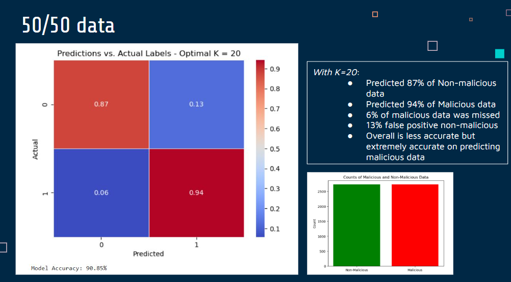
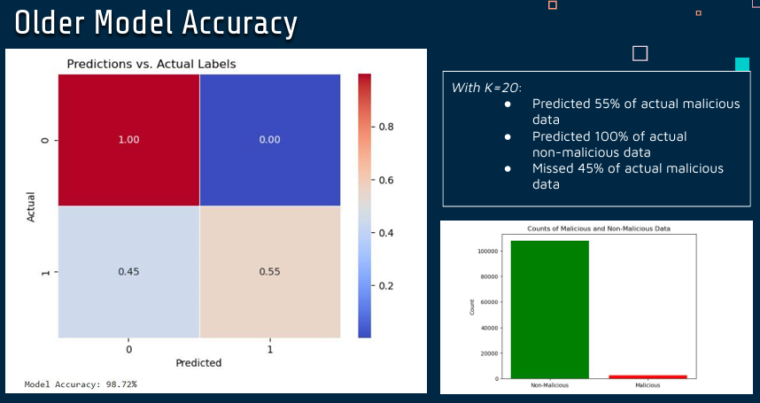

Enhanced Machine Learning Model
Latest model focused on stronger malware detection behavior.
Project Detail
This research compares baseline and improved malware-detection models, documents lessons around dataset quality, and presents results through posters and technical presentations.

Latest model focused on stronger malware detection behavior.

Initial version that established the project baseline.

Presented at NYCWIC and CURSCA 2025.
Capstone presentation showcasing goals and results.